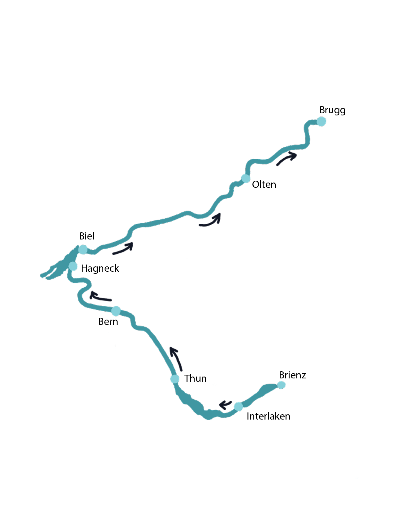

Aare-
Check
Lah di träge, aber nid mitriisse
D'Aareruutä
Wo chani Böötle?
Wassertemperatur: °C →
Lufttemperatur: °C
Momentani Strömig: m³/s →
Durchschnittlächi Strömig: m³/s
*Aare-Check ist ein studentisches Projekt und dient zur Orientierung. Ein- und Ausstiegsstellen sowie die Route sollten vor jeder Fahrt geprüft werden. Die Bedingungen auf der Aare können sich schnell ändern – Sicherheit geht vor.
Heimtückischi Gfahre
Das “Böötle” auf der Aare gehört schon fast so zum Schweizer Sommer wie das Grillieren und die kurzen Hosen. Doch oftmals werden die Gefahren, welche im Fluss lauern, unterschätzt. Laut den Ertrinkungsstatistiken der Schweizerischen Lebensrettungs-Gesellschaft (SLRG) ertrinken durchschnittlich jedes Jahr rund 50 Personen in der Schweiz. Dazu kommen noch zahlreiche Fälle von Beinahe-Ertrinken hinzu, die mitunter schwerwiegende Auswirkungen auf das weitere Leben haben.
So gibt es Gegenstände wie beispielsweise Baumstämme unter Wasser, die man im ersten Moment nicht sieht. Ausserdem sind oft diverse Untiefen, Steine und Felsen vorhanden. Im Fluss lauert eine Vielzahl an Gefahren, welche einem oftmals nicht bewusst sind. Es gilt, sich also zunächst immer über die Ein- und Ausstiegsstellen sowie die geplante Route zu informieren. Eine besondere Gefahr birgt ausserdem die Strömung. Sie ist vom Ufer aus kaum erkennbar.
Das Schwimmen im Fluss zehrt stark an den Kräften einer Person. Selbst geübte Schwimmerinnen und Schwimmer haben gegen eine starke Strömung fast keine Chance. Besonders gefährlich ist es, wenn man irgendwo hängen bleibt. Ein Baum kann Schwimmerinnen und Schwimmer schnell unter die Wasseroberfläche ziehen. Auch bei viel Treibgut muss man aufpassen.
Auf jeden Fall lebensgefährlich sind Wasserwalzen. Dabei handelt es sich um eine spezielle, bei fliessenden Gewässern entstehende Strömung des Wassers, die immer wieder zu lebensbedrohlichen Situationen und auch Todesfällen führt. Hierbei kommt es an der Wasseroberfläche zur Rückströmung. Diese kann dazu führen, dass man zwar die Luft wieder erreicht, doch die oberflächennahe Rückströmung zieht einen zurück und drückt einen wieder nach unten.
Für eine sichere Bootsfahrt sollten deshalb die Flussregeln der SLRG eingehalten werden. Es empfiehlt sich zudem, eine geeignete Schwimmweste zu tragen. Ebenfalls hilfreich ist es, die wichtigsten Flusssignale zu kennen.